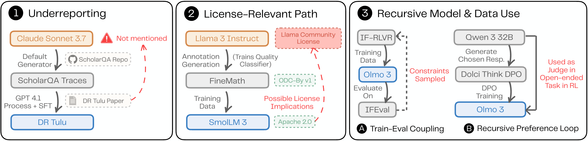
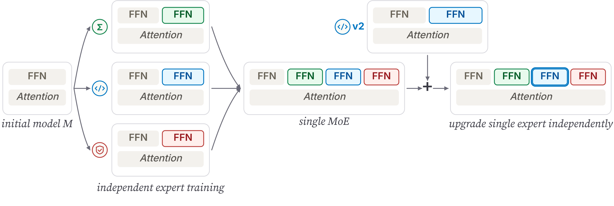

I'm a 4th-year EECS undergrad at UC Berkeley, where I'm advised by Sewon Min as part of Berkeley AI Research (BAIR) and the Berkeley NLP Group. I'm interested in how data and training decisions shape language model capabilities, and how we can improve them. I previously worked on training systems and GPU performance at Jane Street.
News
- Oct 2026 — Talk: ModSleuth @ BAIR NLP Workshop
- July 2026 — Branch-Adapt-Route (BAR) accepted to COLM 2026!
Publications
-

Which Models Are Our Models Built On?
Auditing Invisible Dependencies in Modern LLMsWe introduce ModSleuth, an agentic system that reconstructs the dependency graphs behind modern LLMs from papers, model cards, dataset cards, code, configs, and upstream artifacts. It traces how models are used to generate data, filter corpora, evaluate outputs, and guide training decisions, recovering 1,060 source-verified dependencies across four releases and surfacing license-relevant paths, train-evaluation coupling, and documentation mismatches.
* equal contribution
-

Train Separately, Merge Together: Modular Post-Training with Mixture-of-ExpertsIn Proceedings of COLM 2026
We present BAR (Branch-Adapt-Route), a recipe for modular post-training. Rather than training a single model on all data at once, BAR trains independent domain experts – each through its own complete training pipeline – and composes them into a unified model via a mixture-of-experts (MoE) architecture. Each expert can be developed, upgraded, or replaced without touching the others.
* equal contribution
Industry Experience
-
Jane Street, Machine Learning Engineer Intern
May – Aug 2026
Training Systems and GPU Performance
-
Google, Software Engineer Intern
May – Aug 2025
Agent Evals
-
Apple, Machine Learning Engineer Intern
Mar – May 2025
Agentic Search and Memory